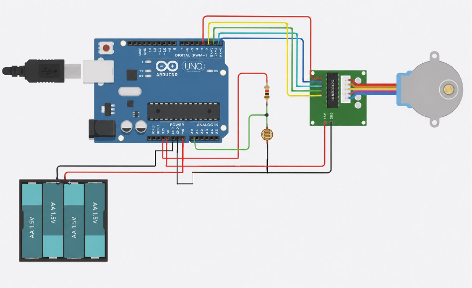
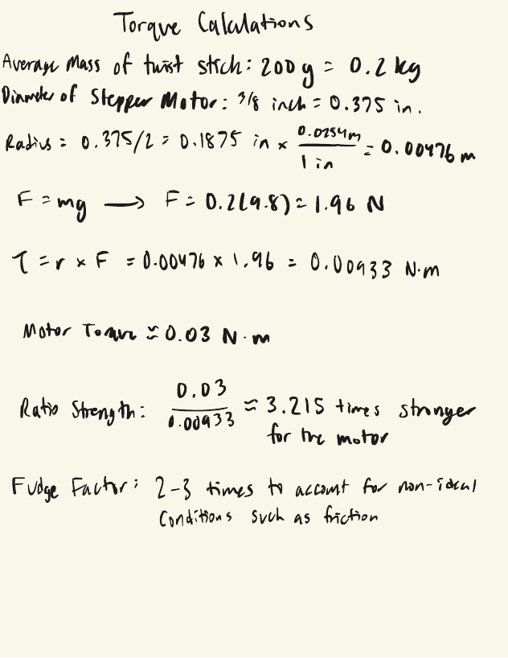

A self-adjusting blinds system that reads ambient light and drives a stepper motor to open or close the blinds automatically — reducing energy use and removing the need for anyone to touch a switch. The design and results were published in the World Journal of Engineering & Technology.
The system pairs a photoresistor with an Arduino Uno to continuously sense ambient light levels in a room. When light crosses a set threshold, the microcontroller drives a ULN2003 motor driver, which steps a small stepper motor connected to the blinds' twist rod — opening the blinds in bright conditions and closing them as light fades, with no manual input required.
The Arduino is powered by a 4×AA battery pack and reads the photoresistor through an analog input, using a voltage-divider resistor to convert light intensity into a readable signal. Digital outputs drive the ULN2003 driver board, which supplies the current needed to turn the stepper motor — isolating the Arduino's low-power logic pins from the motor's higher current draw.

Before finalizing the motor choice, I worked through the torque required to twist the blinds' rod against its own weight, then compared that against the stepper motor's rated torque to confirm it had enough headroom — including a fudge factor for real-world friction and non-ideal conditions.

The blinds opening and closing in response to the light-based trigger, driven end to end by the circuit above.